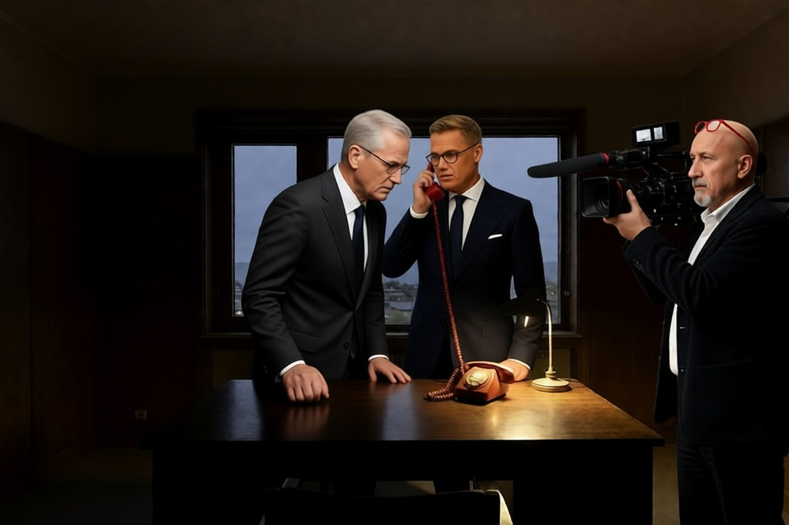

Geopolitica · 29 ottobre 2026
Finlandia e Norvegia telefonano a Putin, e l'Europa si divide

Due dei paesi che aiutano di più l'Ucraina hanno chiamato il Cremlino. A protestare per prime non sono state Mosca o Kiev, ma Copenaghen e Stoccolma. E anche Roma ha preso le distanze.
di Franco Zanghì
Martedì 27 ottobre, a Helsinki, mentre sono riuniti i capi di governo del Nord Europa per il Consiglio nordico, il presidente finlandese Alexander Stubb e il primo ministro norvegese Jonas Gahr Støre chiamano insieme Vladimir Putin. Parlano per circa un'ora e mezza. Subito dopo telefonano a Volodymyr Zelensky e gli riferiscono il contenuto.
Non è una telefonata come tante: dal febbraio 2022 i leader dell'Europa occidentale con Putin quasi non parlano, e l'ultimo contatto confermato era quello di Emmanuel Macron, nel luglio 2025.
Perché adesso
Nel frattempo è cambiato il quadro a Washington. Nelle ultime settimane Donald Trump ha tolto alcune sanzioni alla Russia, ha concluso un accordo per comprare gasolio russo e ha detto che l'Ucraina ha bisogno di un nuovo presidente. Secondo l'agenzia Reuters i rapporti fra Stati Uniti e Ucraina sono al punto più basso degli ultimi diciotto mesi. E finora, a parlare con Mosca dell'Ucraina, era quasi soltanto l'America.
Stubb e Støre hanno chiarito di avere parlato a nome dei loro paesi, non dell'Europa, e che la telefonata era stata preparata insieme all'Ucraina. Stubb l'ha definita una conversazione franca e sostanziosa. Støre ha raccontato di avere chiesto passi concreti: fermare gli attacchi agli impianti dell'energia, in Russia e in Ucraina, fermare i colpi sulle navi che trasportano il grano ucraino, scambiare i prigionieri di guerra.
Il Cremlino ha fatto sapere che, per Putin, una pace giusta e duratura è possibile soltanto tenendo conto, pienamente e senza condizioni, degli interessi legittimi della Russia: la posizione di sempre. L'unica novità è che i tre hanno concordato di restare in contatto diretto.
Le capitali che protestano
La premier danese Mette Frederiksen si è detta molto scettica: l'iniziativa, ha osservato, non è stata coordinata con nessuno degli altri, e non si capisce che cosa si pensi di ottenere. Lo svedese Ulf Kristersson parla del rischio di spaccare la voce europea. Il polacco Donald Tusk chiede cautela e di non farsi illusioni sulle intenzioni di Mosca. Fonti di Palazzo Chigi hanno fatto sapere che l'Unione europea non deve andare in ordine sparso.
Støre ha replicato che chi ritiene che l'unico canale per parlare di Ucraina con Mosca debba restare quello americano ha il diritto di pensarlo, ma che per lui è importante che si sentano anche altre voci.
C'è anche chi ridimensiona la frattura. Juhana Aunesluoma, storico dell'Università di Helsinki, ha detto alla televisione pubblica finlandese che si tratta di una fase esplorativa, che le critiche di danesi e svedesi raccontano più la vicinanza fra paesi nordici che una vera spaccatura, e che finora la Russia ha mostrato poco interesse a parlare con l'Europa nel suo insieme.
Il passaggio italiano
La settimana prima, a Oslo, Stubb e Støre avevano riunito Zelensky, gli inviati di Trump e i rappresentanti di Regno Unito, Germania, Italia, Commissione europea e Nato. E all'inizio dell'anno Giorgia Meloni, insieme a Macron, aveva chiesto che l'Europa aprisse un canale proprio con Mosca: Germania, Polonia, Svezia, Danimarca e paesi baltici avevano detto di no. Quel canale, adesso, l'hanno aperto due paesi del Nord da soli.
Nella prima metà di novembre, ad Abu Dhabi, riprendono i colloqui fra Stati Uniti, Ucraina e Russia. Secondo Euronews, Commissione e Consiglio europeo preparano una squadra comune, che sarebbe guidata da Björn Seibert, capo di gabinetto di Ursula von der Leyen. Se quella squadra si siederà al tavolo con i russi, la telefonata di Helsinki sarà stata il primo passo di un'Europa che torna a contare; se Mosca terrà fuori gli europei, avrà avuto ragione Frederiksen.
Fonti
- Presidenza della Repubblica di Finlandia, comunicato 66/2026, «President Stubb and Prime Minister Støre held a phone call with President Putin», 27 ottobre 2026
- Reuters, «Norway's premier says call with Putin was effort to present European views», 28 ottobre 2026
- Euronews, «Finnish and Norwegian leaders call Putin, urge restart of peace talks», 27 ottobre 2026
- Euronews, «Dopo mesi di esitazioni, l'Europa si dice pronta al dialogo diretto con la Russia», 28 ottobre 2026
- Adnkronos, «Ucraina, scoppia il caso della telefonata di Putin con Norvegia e Finlandia. Fonti Palazzo Chigi: Ue non vada in ordine sparso», 28 ottobre 2026
- Associated Press, «US ties with Ukraine hit new low as Trump slights Zelenskyy and eases up on Russia», 19 ottobre 2026
- Yle, intervista a Juhana Aunesluoma, Università di Helsinki, 28 ottobre 2026
- DR, dichiarazioni di Mette Frederiksen, e DN, dichiarazioni di Ulf Kristersson, 27 ottobre 2026
La data dei colloqui di Abu Dhabi non è ancora fissata: il Cremlino indica la prima metà di novembre. Björn Seibert è indicato da Euronews come probabile capo della delegazione europea, senza una nomina ufficiale.